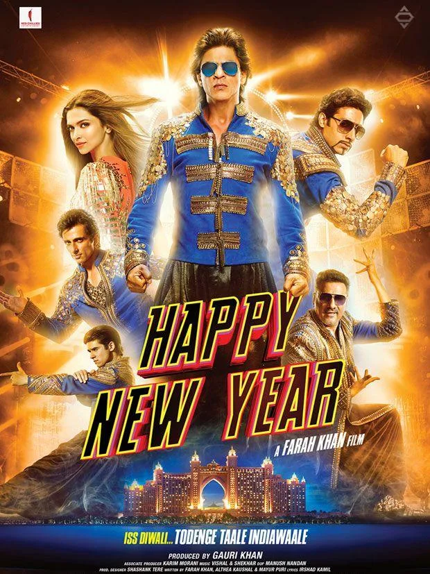
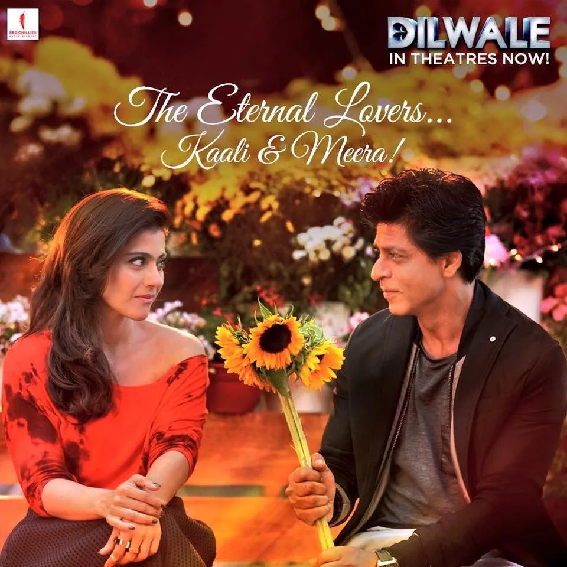
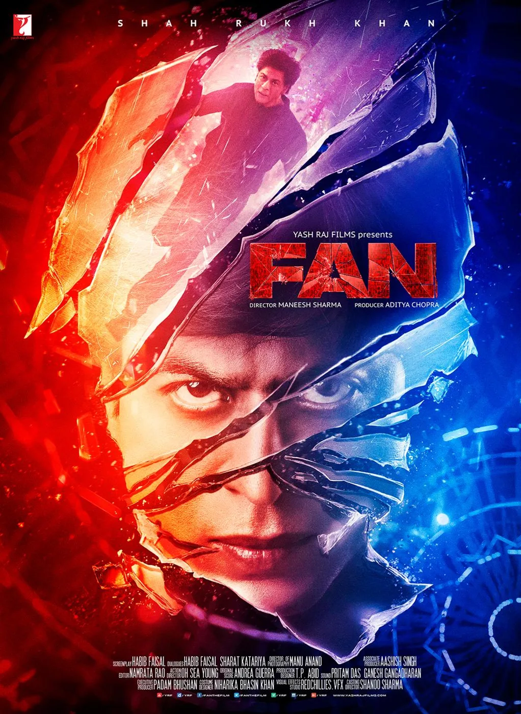

Part III · The Years of the Apparent Lull, 2014 to 2018 · 16 of 57
Chapter 14 · Seven Films, Side by Side
The train reached its station in August 2013. Then, film by film, the man who had driven it began to step off. The films kept coming and most of them made money. What thinned out was the story around them. This Part puts the seven films side by side, draws the curve, sets out five possible explanations, and states what the evidence can and cannot support.
2014: a tour and a trophy. The first film after the train was Farah Khan’s heist comedy Happy New Year, and its campaign went back to the stage: before release the cast toured North America and Britain as SLAM! The Tour, opening at Houston’s Toyota Center in September 2014. (Fact. ABC13 Houston, Sept 2014) His Knight Riders won their second IPL title on 1 June 2014. (Fact. Wikipedia: Kolkata Knight Riders)

Happy New Year (2014)
2015: fifty, and a sentence. On his fiftieth birthday, 2 November 2015, he told an interviewer there was “extreme intolerance” in the country. Politicians attacked him, and Dilwale, his reunion with Kajol, met protests; in Mangaluru, Bajrang Dal activists stopped screenings. Four months later he said he had been misunderstood and added: “Freedom of speech means the right to keep silent also.” (Fact. The News Minute, 1 Mar 2016) The showman who had answered every question for twenty-five years had found a new position: silence as a right. (Analysis)
2016: a film about a fan. Fan was about the thing he knew best: Gaurav, an obsessive young man from Delhi who looks exactly like his idol, the star Aryan Khanna, and turns on him when the star rejects him. He played both, with prosthetics by the Hollywood make-up artist Greg Cannom and effects by Red Chillies VFX. (Fact. Wikipedia: Fan) The campaign was built around real fans: an anthem, “Jabra Fan”, recorded in several languages including Arabic, and a logo made from photographs of real fans. (Fact. same source; Gulf News) It is the most revealing film of the decade for this book: a star made a film about the danger of a fan who believes he owns the star, in the same years he was stepping back from his fans. (Analysis) Later that year Dear Zindagi, in which he played a therapist in a supporting role, became the first Hindi film to market itself on Tinder. (Fact. exchange4media, 14 Nov 2016)

Dilwale (2015)
2017: the train again, and a death. For Raees he went back to the idea that had worked in 2013, a train, but in person. On 23 and 24 January 2017 he rode the August Kranti Rajdhani from Mumbai to Delhi, meeting fans on the platforms. At Vadodara the crowd surged; one man died and two were injured. He called it “really unfortunate”. (Fact. Business Standard / IANS, 24 Jan 2017) In 2013 the train had been virtual and the fans moved it with their thumbs. In 2017 it was real, and a fan died on the platform. The direct line had become dangerous. (Analysis) Later that year Jab Harry Met Sejal replaced the single trailer with a series of short “mini trails”. (Fact. Millennium Post, 16 June 2017)
2018: the most inventive campaign since the train. Zero gave its hero, Bauua Singh, a short man from Meerut with an outsized ego, a digital life of his own: India’s first Snapchat lens for a film, a WhatsApp sticker pack, an Amazon Alexa skill billed as a first for a Bollywood film, a Twitter handle written by the film’s writer, and Bauua Ki Toli, a points game whose top fans met the cast. (Fact. exchange4media, 19 Dec 2018; Social Samosa) The trailer reached 100 million YouTube views faster than any Indian film before it. (Fact. Wikipedia: Zero) It cost ₹200 crore and grossed about ₹191 crore. (Fact. same source)

Fan (2016)
The seven-film matrix
| Film | Released | Director | Reported budget | Worldwide gross | Gross ÷ budget | The campaign’s big idea | The fan’s role |
|---|---|---|---|---|---|---|---|
| Chennai Express (benchmark) | 8 Aug 2013 | Rohit Shetty | ₹70–115 cr | ₹423–424 cr | 3.7–6.1 | A train fans moved with tweets; games, karaoke, interactive video; daily analytics | Driver, player, contributor |
| Happy New Year | 24 Oct 2014 | Farah Khan | ₹140–150 cr | ₹342–394 cr | 2.3–2.8 | SLAM! The Tour, a live world tour | Audience at a show |
| Dilwale | 18 Dec 2015 | Rohit Shetty | ₹165 cr | ₹376.85 cr (est.) | 2.3 | The reunion with Kajol | Viewer |
| Fan | 15 Apr 2016 | Maneesh Sharma | ₹85 cr (₹105 cr with publicity) | ₹182–188 cr | 1.7–2.2 | “Jabra Fan” in several languages; a logo of real fans’ photos | Subject of the campaign |
| Dear Zindagi | 25 Nov 2016 | Gauri Shinde | ₹22 cr | ₹138.91 cr | 6.3 | A Tinder tie-in, “Swipe Right for Zindagi” | User of a partner app |
| Raees | 25 Jan 2017 | Rahul Dholakia | ₹87–91 cr | ₹272.54–281 cr | 3.0–3.2 | A real train, Mumbai to Delhi | Crowd on a platform |
| Jab Harry Met Sejal | 4 Aug 2017 | Imtiaz Ali | ₹90 cr | ₹153.43 cr (est.) | 1.7 | Thirty-second “mini trails” | Viewer, sharer |
| Zero | 21 Dec 2018 | Aanand L. Rai | ₹200 cr | ₹191.43 cr | 0.96 | Bauua’s own digital life: Snapchat lens, stickers, Alexa, Bauua Ki Toli | Player, within the release window |
(Fact for the first six columns: each film’s Wikipedia page and Red Chillies’ filmography, October 2026; where sources disagree, the range is printed. The ratio is this book’s arithmetic, gross against reported budget, and is not profit. The last two columns are Analysis. Fan was a Yash Raj Films production; the others after Chennai Express are Red Chillies productions or co-productions.)
Read the matrix row by row and one thing is plain: the money held up. Six of the seven grossed more than their reported budgets, and Dear Zindagi, a small film with him in a supporting part, returned the most per rupee. Only Zero grossed less than it cost. (Fact, from the table) Read it column by column and something else appears. Every campaign had a clever idea: a tour, a dating app, a train, an AR lens. None was a system. Chennai Express gave the audience a role across every channel for ninety days. Its successors gave the audience a moment, then moved on. (Analysis)

Zero (2018). (Posters: Final Thesis archive)
What the matrix leaves out. Each campaign had more pieces than its big idea. Happy New Year had an official game for Android and iOS, built with Gameshastra and released on 13 October 2014, and posters personalised in the cast’s own handwriting for social media; before release its distribution, satellite and music rights had brought in ₹202 crore. (Fact. Wikipedia: Happy New Year) Fan painted his own house in graffiti, ran a contest called “Tu Nahi Samjega” and put a mobile game by 99Games into development; its trailer drew 4 million views in 24 hours. (Fact. Wikipedia: Fan) The social-media campaign of Jab Harry Met Sejal won the Capability Award for Best Use of Social Media at the Asian Customer Engagement Forum. (Fact. Wikipedia: Jab Harry Met Sejal) Zero added a TikTok #zerochallenge, open until 26 December 2018, and from 30 November a Bauua Ki Toli site where fans earned points through social-media tasks, redeemable for merchandise, signed posters and Paytm ticket cashback; its trailer drew 54 million views in its first 24 hours, and from 5 to 7 December he played to about 100,000 people at Dubai’s Global Village. (Fact. Social Samosa, 21 Dec 2018; Wikipedia: Zero)
None of these campaigns published a participation figure to set beside Chennai Express’s 750,000 tweets: no game downloads, contest entries, Toli members or lens uses. (Fact: the sources above) The absence is itself a finding. A campaign that counts its fans’ actions every day is built differently from one that counts its views. (Analysis)